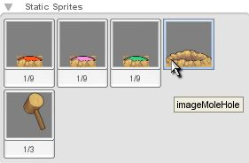
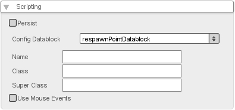
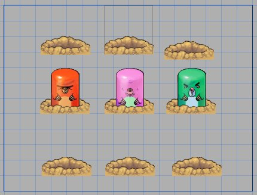
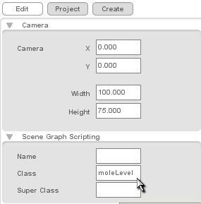
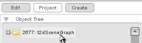
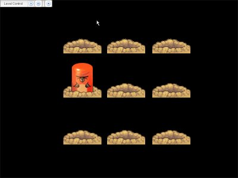
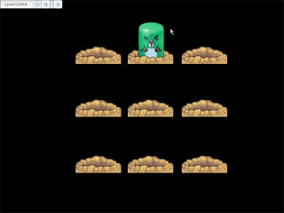

Torque 2D - Whack-A-Mole Tutorial Part 2
Part 2 - Respawning the Mole
Adding respawn points
The next step is to let the moles respawn after it gets whacked. We do not want the mole to respawn at the same position it was when you whacked it but we do not want it to respawn at a completely random position either. So the first thing we will do is add some respawn points to our level.
We will simply use static sprites as our respawn points. We will be using the hole image, that you should see listed in your Static Sprites object library in the Create tab (as shown in Figure 2.1).

Figure 2.1
We will again use the class field to assign the class respawnPoint to our respawn points. But as we will probably have several respawn points per level, it would be a bit tedious to type respawnPoint over and over again. Fortunately with T2D we have an object called "config datablocks" that can store data that will be repeated across multiple objects. So we will use a config datablock to make our life easier.
First, we will create a file for later. Add the bold text to your startGame() function in game.cs:
function startGame(%level)
{
//exec game scripts
exec("./mole.cs");
exec("./respawnPoint.cs");
// Set The GUI.
Canvas.setContent(mainScreenGui);
Canvas.setCursor(DefaultCursor);
moveMap.push();
// this has been added:
sceneWindow2D.setUseObjectMouseEvents( true );
if( isFile( %level ) || isFile( %level @ ".dso"))
sceneWindow2D.loadLevel(%level);
}
Code Sample 2.1
Now look in your gameScripts folder. You should find datablocks.cs. Open this file and add these lines of code:
datablock t2dSceneObjectDatablock( respawnPointDatablock )
{
class = "respawnPoint"; // the class that will be associated with the object
layer = 5; // the render layer
size = "16 16"; // the size of the object
};
This is the file where you create all of your datablocks. Now that it has the respawnPoint datablock, let's fire up T2D and add it to our mole hills.
Code Sample 2.2
|
 |
Now after you create each mole hill, navigate to the Edit tab, open Scripting, and add the respawnPointDatablock.(as shown in Figure 2.2).
Note: If you had T2D open, you will need to restart it to get the datablock to show up.
They will also automatically be placed in layer 5, behind the mole--another handy attribute. |

Figure 2.3
Now let's create the methods of the respawnPoint class. The following functions go in respawnPoint.cs:
function respawnPoint::onLevelLoaded(%this, %level)
{
%level.respawnPointSet.add(%this);
}
function respawnPoint::onLevelEnded(%this, %level)
{
if( isObject( %level.respawnPointSet ) )
%level.respawnPointSet.remove(%this);
}
Code Sample 2.3
The above code explained: We need to keep track of all the respawn points, so here we create an object called a "SimSet". The SimSet object allows us to add other objects to it and then access it later like a list. So we keep track of all respawn points with a SimSet (%level.respawnPointSet) that is attached to the current level. When a respawn point is created it registers itself to this SimSet.
respawnPoint::onLevelEnded() unregisters the respawn point when it is deleted. Now we have a set of all respawn points we place in the level editor. We also have to create and destroy the respawnPointSet SimSet. We use the onLevelLoaded() and onLevelEnded() callbacks of the level itself.
Create another script file named moleLevel.cs, exec() it in game.cs below the ones we have already done and type the following functions into it:
function moleLevel::onLevelLoaded(%this)
{
%this.respawnPointSet = new SimSet();
}
function moleLevel::onLevelEnded(%this)
{
%this.respawnPointSet.delete();
}
Code Sample 2.4
|
 |
We now want to set our scenegraph's class to moleLevel. To do this first re-open T2D and you should be presented with your level. Now you can click the "Project" tab and you should see an "Object Tree View", select the scenegraph at the top of the tree (as shown in Figure 2.4, don't worry if the number before "scenegraph" doesn't match the picture). With the scenegraph selected click the "Edit" tab and expand the "Scene Graph Scripting" section. There you can specify the name, class, and super-class of your level. Give it the class moleLevel and press enter (as shown in Figure 2.5). |
|
 |
Spawning a new Mole
Now that we have our respawn points we can get the mole to actually respawn. For this purpose we add a new function to moleLevel.cs: moleLevel::spawnMole(). This function will pick one of the respawn points randomly and spawn a new mole there:
function moleLevel::spawnMole(%this)
{
// find a spawn point
%respawnPointIndex = getRandom( %this.respawnPointSet.getCount()-1 );
%respawnPoint = %this.respawnPointSet.getObject( %respawnPointIndex );
// select a color for the mole
%color = getRandom(2);
if( %color == 0 )
%color = "red";
if( %color == 1 )
%color = "green";
if( %color == 2 )
%color = "lilac";
// create a new Mole
%mole = new t2dAnimatedSprite()
{
sceneGraph = %this;
class = "mole";
layer = 4;
size = "9 16";
};
// play right animation according to the color
%mole.playAnimation("animMoleComeOut" @ %color);
// save the selected color as dynamic field
%mole.moleColor = %color;
// set the position of the mole to the position
// of the respawn point
%mole.setPosition( %respawnPoint.getPosition() );
}
Code Sample 2.5
And there we have a brand new mole. We just have to call this function when we want a new one. We will do this every time a mole gets whacked. Let's modify mole::onAnimationEnd() (in the mole.cs file) for this purpose (new code is bolded):
function mole::onAnimationEnd(%this)
{
if( %this.getAnimationName() !$= ("animMoleComeOut" @ %this.moleColor) )
{
// after deleting the old mole schedule a respawn
// >%this.sceneGraph< is the level
%this.sceneGraph.schedule( 1500, "spawnMole");
%this.safeDelete();
}
}
Code Sample 2.6
There is a delay between deletion of the mole and its respawning (as shown in Figure 2.6).
|
 |
|
 |
Revision 2.1